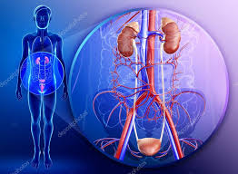

Boşaltım Sistemi
Boşaltım sistemi, hücresel solunum ve diğer metabolik faaliyetler sonucu oluşan zararlı ve fazla maddelerin vücuttan uzaklaştırılmasını sağlar.
Bu sistem sayesinde vücudun su, mineral ve asit–baz dengesi korunur. Boşaltım sistemi olmadan vücutta zehirli maddeler birikir ve hayati tehlike oluşur.
Boşaltım Sisteminin Yapıları
Boşaltım sistemi; böbrekler, üreter, mesane ve üretradan oluşur. Bu yapılar birlikte çalışarak idrarın oluşmasını ve vücuttan atılmasını sağlar.
Görevleri
- Böbrekler: Kanı süzer, idrar oluşumunu sağlar.
- Üreter: Böbreklerde oluşan idrarı mesaneye taşır.
- Mesane: İdrarı geçici olarak depolar.
- Üretra: İdrarın vücut dışına atılmasını sağlar.
Boşaltım Sisteminin Önemi
Boşaltım sistemi sayesinde vücutta biriken zararlı maddeler uzaklaştırılır. Ayrıca su dengesi korunur ve iç ortamın sabit kalması sağlanır. Bu durum homeostazi için çok önemlidir.
Boşaltım Sistemi Yapıları ve Görevleri (Özet Tablo)
| Yapı | Görevi |
|---|---|
| Böbrek | Kanın süzülmesi ve idrarın oluşturulması |
| Üreter | İdrarın mesaneye taşınması |
| Mesane | İdrarın depolanması |
| Üretra | İdrarın vücut dışına atılması |
Sık Sorulan Sorular
Boşaltım sistemi neden önemlidir?
Çünkü zararlı maddelerin vücuttan atılmasını ve iç dengenin korunmasını sağlar.
Boşaltım sistemi hangi organlardan oluşur?
Böbrekler, üreter, mesane ve üretradan oluşur.
Kısa Özet
Boşaltım sistemi, vücudun temizlenmesini ve sağlıklı çalışmasını sağlar. Böbrekler bu sistemin en önemli organıdır.
← Ana Sayfaya Dön